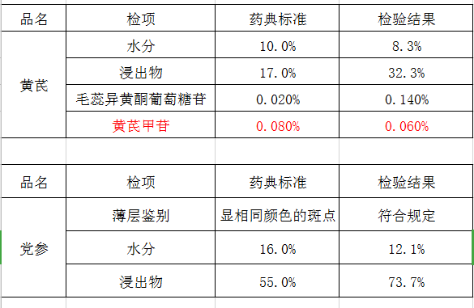
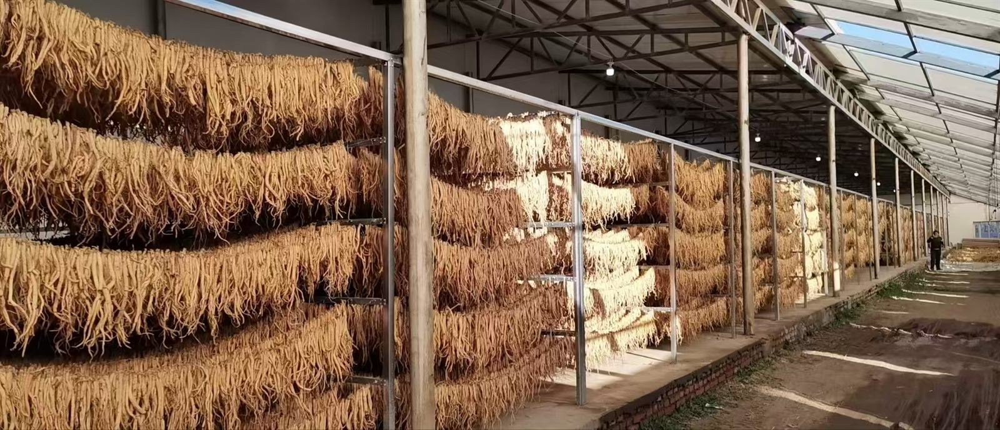
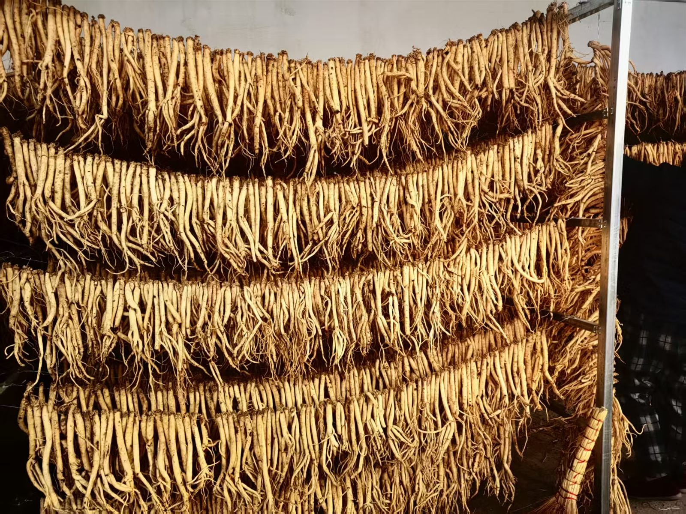
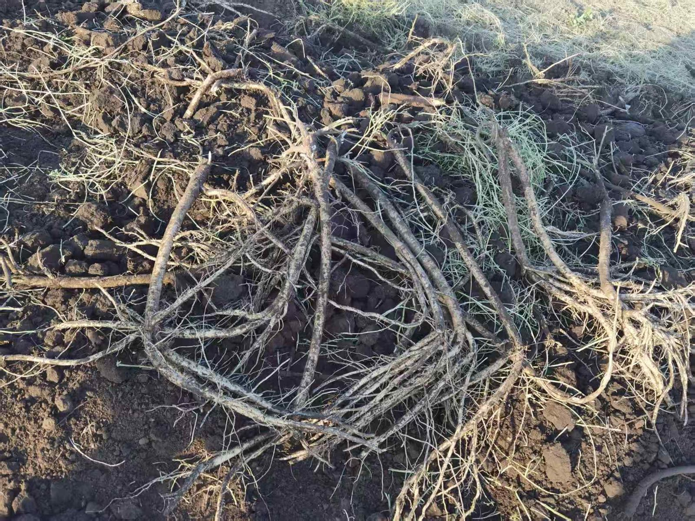
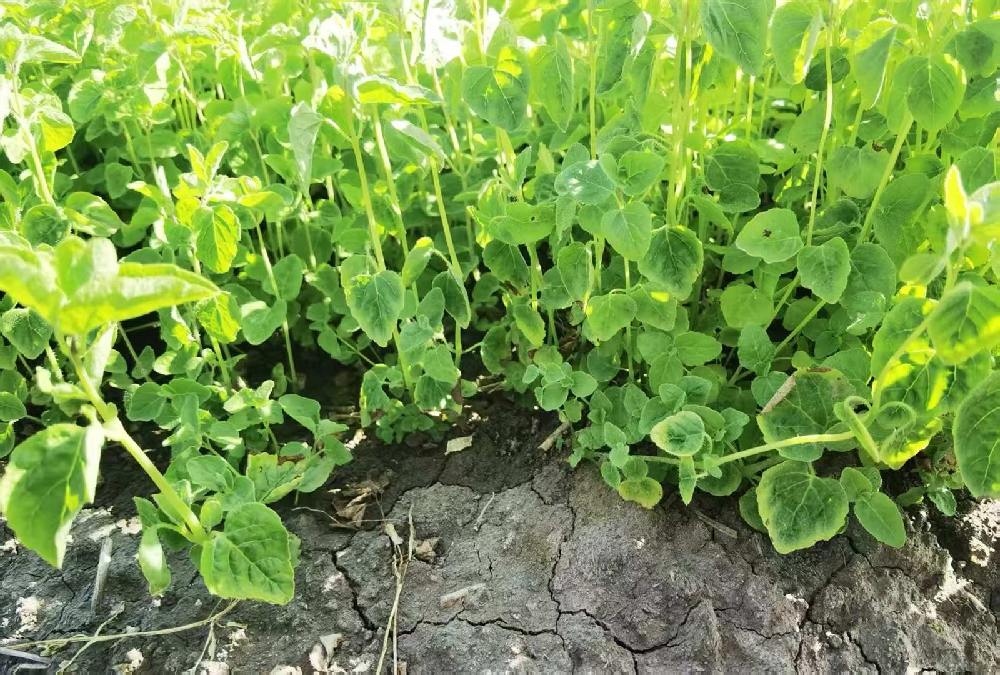

覆盖根及根茎、果实种子、菌藻、花叶四大品类，均为道地产区当季新货，支持小样验货与批量定制。
大补元气、复脉固脱、补脾益肺。优选长白山产区生晒参，芦头完整、参体饱满、香气纯正。
滋补肝肾、益精明目。粒大色红、肉质肥厚、口感甘甜，无硫无添加，可溯源。
补气固表、利水消肿、托毒排脓。切片均匀、粉性足、豆腥味纯正，含量稳定。
补血活血、调经止痛、润肠通便。主根粗壮、油润芳香，为当归中之上品。

散瘀止血、消肿定痛。个头坚实、铜皮铁骨，皂苷含量高，支持打粉加工。
利水渗湿、健脾宁心。质地坚实、色白细腻，切面有细腻云纹，药食两用。

清热解毒、疏散风热。花蕾饱满、色泽黄白相间、清香怡人，绿原酸含量达标。

补气安神、止咳平喘。仿野生段木培育，菌盖厚实、漆样光泽，孢子粉丰富。

理气健脾、燥湿化痰。油室饱满、香气浓郁，年份越久越陈香，可长期贮存。
息风止痉、平抑肝阳。麻形饱满、鹦哥嘴明显，天麻素含量高，切片透明。

益胃生津、滋阴清热。条索紧实、嚼之黏糯，多糖含量高，鲜条、枫斗皆可。
补中益气、健脾益肺。条粗质柔、气香味甜，狮头凤尾，为常用补益要药。
我们支持按需寻货、打粉、切片、分级包装等定制服务，欢迎提交需求。